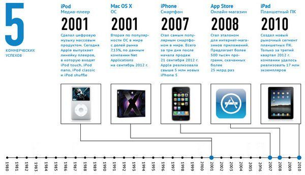

Основные достижения Джобса связаны не с созданием новых продуктов, а с переосмысливанием уже существующих вещей. iPhone не первый телефон, но один из первых, сочетающих удобство, простоту и функциональность. То же самое можно сказать и применительно к iPad и iPod. OS X вышла на рынок при практической монополии Microsoft, однако принесла новые идеи и каждый год продолжает показывать свое видение удобной и стабильной ОС. Таким запомнится нам Стив Джобс с его революционным идеями и изобретениями.
| Название продукта на презентации | Дата Презентации | Оратор | Дата выхода продукта |
|---|---|---|---|
| Apple I | 1976 год | Steve Jobs | 3 января 1977 |
| Macintosh | 1984 год | Steve Jobs | 24 января 1984 |
| iMac G3 | 1998 год | Steve Jobs | 15 августа 1998 года |
| iPod | 2001 год | Steve Jobs | 23 октября 2001 |
| iPhone | 2007 год | Steve Jobs | 29 июня 2007 года |